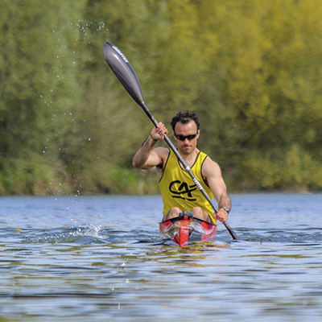
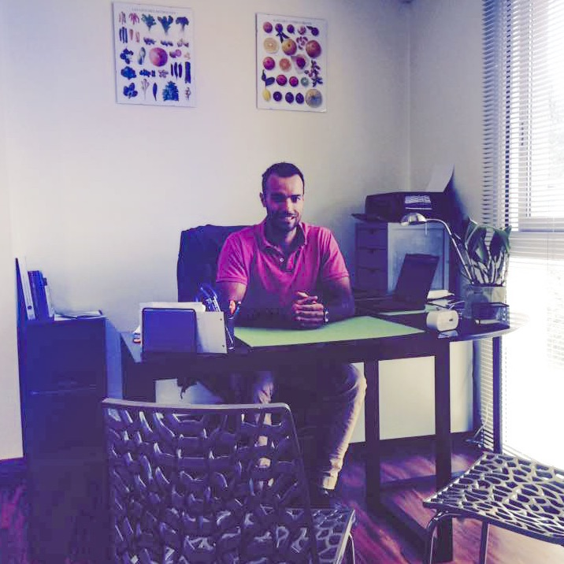

Mincir durablement
Apprendre à manger les bonnes quantités et apporter l'énergie dont mon corps a besoin. Ne rien supprimer, et adapter mon alimentation pour garder le bénéfice à vie.
J'ai découvert la diététique par ma pratique sportive car avec l'augmentation de la quantité de mes entraînements, j'ai du apprendre à adapter ce que je mangeais par rapport aux besoins de mon corps. Puis la diététique et la nutrition sont devenus une de mes passions et mon métier.
La diététique est une science qui vous permet de comprendre comment bien équilibrer votre alimentation et aussi de l'adapter à vos besoins.
C'est pour cela que je propose de suivre un programme individuel où je vais jouer le rôle d'éducateur mais aussi coach pour vous donner de bonnes habitudes alimentaires mais aussi d'hygiène de vie avec la pratique d'une activité physique saine.
Le fait d'être à votre écoute et de m'adapter à vos habitudes de vie, va vous permettre de mettre en place un capital santé que vous pourrez garder à vie, car le important c'est un effet durable, sans restriction, tout en gardant le plaisir.
Pour renforcer mes connaissance, j'ai suivi une formation à la consultation en micronutrition pour m'intéresser au profil de chacun, comprendre l'origine des carences et apprendre à supprimer les symptômes et les causes de carences; malabsorption, hyperperméabilité intestinale, problèmes d'intolérances alimentaires, grosse fatigue...
En savoir plus Consulter mon blogLes raisons qui vous poussent à une prise en charge diététique peuvent être diverses
Pathologie cardiaque ou digestive, trouble métabolique (diabète, hypercholestérolémie, maladie de Crohn, RCH, allergie ou intolérance alimentaire, lithiase...) ou inconfort intestinal
Hygiène de vie, envie d'une alimentation équilibrée et variée, esthétique, perte de poids durable, éviter l'effet yoyo de perte et reprise de poids
Situation nouvelle (grossesse, allaitement, travail en horaires décalés, médication entraînant une prise ou perte de poids ...), troubles du comportement alimentaire (anorexie, boulimie, hyperphagie) ou phobie alimentaire
Coaching sportif individualisé, diététique du sportif, préparer une compétition, savoir s'alimenter avant, pendant et après un entraînement ou une compétition, savoir utiliser les compléments alimentaires et bien les adapter aux besoins du sportif, prévention du dopage
Selon vos objectifs, je vous propose un programme adapté

Apprendre à manger les bonnes quantités et apporter l'énergie dont mon corps a besoin. Ne rien supprimer, et adapter mon alimentation pour garder le bénéfice à vie.

Je me sens souvent fatigué, mes habitudes de vie sont désorganisées. Je dois retrouver la forme et la bonne santé. Il me faut un programme individuel pour m'apporter une bonne hygiène de vie.

Vous êtes irritable, agressif, impatient, anxieux et vous avez envie de grignoter du sucré à longueur de journée ? Certaines carences peuvent être à l’origine de ces déséquilibres émotionnels.
Vous pouvez me contacter et prendre rendez vous par les moyens suivants:
| Séance | Durée | Prix |
|---|---|---|
| Bilan nutritionnel individuel | 1h | 45€ |
| Suivi individuel | 30min à 45min | 35€ |
| Intervention en groupe | 1h | 50€ |
| Bilan nutritionnel famille pour deux personnes | 1h30 | 80€ |
| Suivi Famille | 1h | 60€ |
| Coaching sportif | 1h | 15€ |
| Téléconsultation bilan nutritionnel | 1h | 45€ |
| Téléconsultation suivi nutritionnel | 1h | 35€ |
| Forfait suivi diététique | 1h + 2 x 30min | 105€ |
| Forfait remise en forme | 1h + 2 x 30min | 120€ |